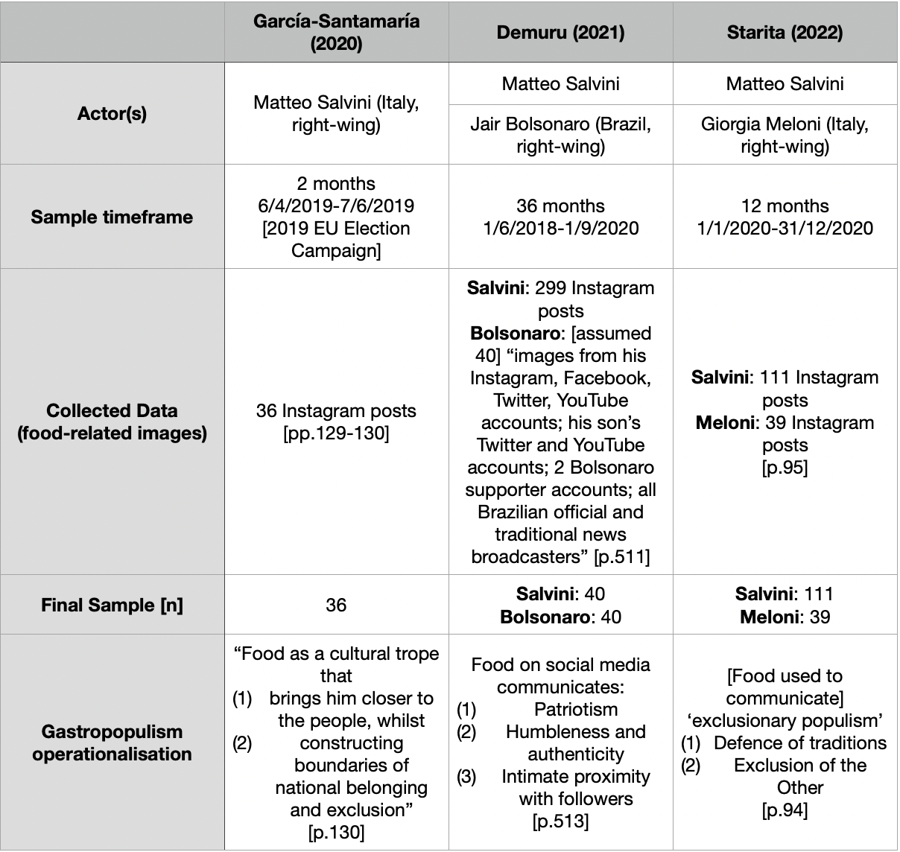

2 Literature Review
2.1 Introduction
This integrative qualitative thematic literature review provides an overview of relevant themes in the emerging gastropopulism field to establish the need for, and assist in developing, a new theoretical model of the concept (Torraco, 2005, p357). The relevant themes are: populism; communication (performance and multimodality); celebrity politics and social media; food semiotics; gastropopulism. The gastropopulism section is a detailed critical engagement with the theoretical assumptions, methodologies, and empirical evidence of the three extant empirical studies. In particular, the over-reliance on data from one political actor/context (Italy’s far-right Matteo Salvini) is critically assessed. This establishes the gap in gastropopulism literature, and demonstrates the need to reconstruct gastropopulism theory. Finally, I offer my account of gastropopulism, developed from the literature synthesised herein, to be robustly empirically tested in subsequent chapters.
2.2 Populism
Whilst ostensibly extensively researched, ‘populism’ lacks conceptual clarity and is frequently conflated with left- or right-wing ideologies (Hunger and Paxton, 2021, p617). Settling the wider debate on populism is beyond the remit of my dissertation. Instead, influenced by Moffitt (2016, p40), my dissertation considers populism as performance, with the central features of: (1) belonging with ‘the people’; (2) bad manners; (3) immediacy. Per García-Santamaría (2021, p32), this is used to convey authenticity, social intimacy, and spontaneity/urgency, in order to construct a blended political and personal identity of the actor. Populists construct an antagonistic divide between ‘the people’ and ‘the elite’ to emphasise their belonging with ‘the people’ (Moffitt, 2016, p43). As a theoretical frame, the features are ideologically and culturally neutral, and flexible to contextual application (e.g., cultural perceptions of ‘bad’ manners) (Moffitt, 2016, p45). Furthermore, Moffitt (2016, p41) asserts that the conceptual tools provided by the dramaturgical lexicon (e.g., performance, audience, stage, prop) are useful for empirical analysis of populism, as they ground the theory’s ontological assumptions in more ‘concrete’ ontic content. Moreover, his performative approach emphasises multimodality (e.g., aesthetics, gestures) (Moffitt, 2016, p40), thus effectively captures the inherently multimodal nature of gastropopulist communication.
2.3 Communication: Performance and Multimodality
Goffman’s (1959) work on performance remains highly influential to the communication field. The central idea is that observation entails a contextual shift, whereby one’s actions become communicative performances, implicitly or explicitly signifying meaning and identity to the observer (Goffman, 1959, p43). This is keenly relevant for political actors, whose highly visible position in the public sphere invites intense observation (McDonnell and Wheeler, 2019, p427). This motivates “impression management”, meaning attempts to influence perceptions by carefully emphasising or concealing certain aspects to present an idealised performance as ‘authentic’ (Goffman, 1959, p30). However, according to Goffman (1959, p36), this can easily backfire because the audience is sensitive both to minor discrepancies and seeming overly calculated. Thus, authenticity itself is a performance, not a discernible true/false characteristic of a performance/performer (Zummo, 2020, p111). As such, this dissertation examines how actors deploy impression management in their multimodal gastropopulist performances, which concerns how such performances (and their performed authenticity) might be discredited, rather than false (Goffman, 1959, p44).
Sigrid Norris (2004, p156), a pioneer of multimodal communication research, asserts that communication studies normatively afford primacy to linguistic modes, with other modes being treated as appendages. Norris (2004, p152) views communicative modes as “loosely bounded units”; the mode of image can be divided (herein) into the modes of language, the body, food, or “a range of other equally correct communicative modes”. As this work centres the actor as a communicator, ‘image’ and ‘video’ are taken to be formats rather than modes of communication. Image (visual) and video (audiovisual) formats of communication are predominant in traditional and social media; political actors increasingly work to take advantage of different modes (particularly the body and objects) to convey messages (Diehl, 2017, p7). Kress (2011, p38) states that the integration of modes constitute “one connected cultural resource for meaning-making”, or, in Goffman’s terms, a communicative performance. Each mode holds equal (potential) capacity to contribute meaning, and each holds distinct affordances and social shaping (Kress, 2011, p38). Accordingly, it is vital that political actors harness the power of multimodal communication to convincingly perform authenticity (Zummo, 2020, p101).
2.5 Food Semiotics
Bourdieu’s (1984) seminal ethnography on the social construction of taste is a common point of reference for social semiotics (meaning-making) literature. Of particular relevance to this dissertation is his construction of an antagonistic divide between the taste preferences of the “dominant elite” (‘high’ culture; refined, healthy, fresh, expensive, quality) and the “dominated mass” (‘low’ culture; popular, unhealthy, processed, cheap, quantity) (Bourdieu, 1984, p468). This is extended by his central claim that “taste in the sense of the ‘faculty of immediately and intuitively judging aesthetic values’ is inseparable from taste in the sense of the capacity to discern the flavours of foods which implies a preference for some of them” (Bourdieu, 1984, p99). Due to this constructed elite/mass divide and the dual meaning of the word taste, food semiotics literature can offer profound insights into populist performances.
Food holds significant and often overlooked communicative power (Stano, 2015, p647). Food, along with its preparation and its consumption, signals taste and identity, particularly of socioeconomic and cultural preferences, access, and belonging (Stano, 2015, p657). To appear relatable and accessible, populist actors often invoke mirror representation as a form of mimetic identification with their constructed ‘people’ (Diehl, 2017, p9). Food-related performances are a highly effective way for populists to align themselves with ‘low’ culture and ‘the people’ and distance themselves from ‘high’ culture and ‘the elites’ (Tindall, 2022, p126).
Unlike ‘shared senses’, such as sight and hearing, taste is a private sense, rendering food preferences and eating habits inherently private (Hai-Jew, 2022, p276; Rüdiger, 2021, p11). Accordingly, political actors can foster parasocial intimacy by selectively sharing personal information about their daily lives through revealing food preferences/habits rather than, e.g., personal relationships (Rüdiger, 2021, p11). Thus, gastropopulist performances are a form of impression management that promote preferred perceptions regarding how the actor truly ‘lives’, though this is ultimately unknowable (Hai-Jew, 2022, p282).
Diehl (2017, p12) positions eating as “the most powerful technique [for populists] to demonstrate proximity and similarity”. When food is incorporated — eaten — it not only provides the body with energy needed to survive, but it becomes the substance of the body (Stano, 2015, p657). You are what you eat. Due to the semiotic weight of this biological process, Diehl (2017, p1) asserts the body as crucial in populist communication to invoke mimetic identification with ‘the people’, and Bourdieu (1984, p190) claims the body as “the most indisputable materialisation of class taste”. In the first empirical study of gastropopulism, García-Santamaría (2020, p146) concludes that “political leaders’ posts of food are never about just food”. The power of food as a political communicative mode lies in its everyday presence concealing its semiotic weight; gastropopulist performances thus offer political actors a less-scrutinised way to construct and legitimise their public identities.
2.6 Gastropopulism
In recent years, academic research has begun to apply food semiotics to populism, termed ‘gastropopulism’. At its core, gastropopulism is political actors’ use of food as a meaning-making device to construct and signify features of populism, particularly belonging with ‘the people’. There are currently only three empirical gastropopulism studies, which exclusively examine it as a right-wing ‘discursive ideology’ used to convey exclusionary nationalism and working class belonging (García-Santamaría, 2020, p129; Demuru, 2021, p511; Starita, 2022, p94).
The studies’ operationalisations undeniably conflate populism with nationalism. The first “fundamental distinctive feature” of populism presented by Demuru (2021, p510) is “the abuse of ‘empty signifiers’, such as [the construction of] ‘the people’” which “revolves around the continuous appeal to a national identity” and the juxtaposition of “‘true’ and ‘legitimate’ citizens [against] the ethnic minorities and migrants […] seen as a concrete threat for the State and the national culture”. Interestingly, Starita (2022, p94) and García-Santamaría (2020, p131) posit Italy as a “country of endemic populism”, yet only examine right-wing actors. Starita (2022, p93) claims that “populism and nationalism share some key ideological elements […] their evolutions have contaminated each other”. García-Santamaría (2020, p133) states that constructions of ‘the people’ represent national belonging in nationalism, and class belonging in populism, so right-wing populists connect to a national- and class-identity of the ‘people’. García-Santamaría (2020, p133) defines “food populism [as] populist leaders’ use of […] food as an empty signifier that connects […] with the national common people”, and explicitly claims that ‘food populism’ avoids “ethnic exoticism”.
Certain modes, herein food, are “less subject to social policing” thus hold unique affordances for political actors constructing identity (Kress, 2011, p41). Accordingly, whilst gastropopulism researchers Demuru (2021, p510) and García-Santamaría (2020, p132) take food to be an ‘empty signifier’, my work centres its active role in gastropopulism by analysing it as a communicative mode. Conflating (gastro)populism with nationalism not only obstructs useful analysis of (gastro)populism, it simultaneously validates exclusionary nationalist actors’ claims to connecting with ‘the people’ (Hunger and Paxton, 2021, p630). Whilst populism is often conflated with right-wing nationalism, extant gastropopulism research has arguably compounded this, specifically conflating the phenomenon with a single actor’s communicative performances — Matteo Salvini, presented in Figure 2.1:
Figure 2.1: Contextualising current empirical gastropopulism studies

Figure 2.1 shows that empirical evidence of gastropopulism is overwhelmingly drawn from Italy (84.9%) and Salvini (70%). Salvini posts significantly more food-related content than Bolsonaro and Meloni in the samples’ timeframes. This lends support to my gastropopulism-as-performance approach, as it indicates that the use of gastropopulist communication is linked to the individual actor more plausibly than the ideology or country.
Approaches rooted in ideology and discourse cannot usefully engage with (1) why gastropopulism is not used by all ‘populist’ actors, (2) what motivates the use of ‘gastropopulism’ over general ‘populism’, and (3) why ‘non-populist’ actors sometimes invoke gastropopulism. My performative approach easily accommodates these questions: actors tailor performances to the context and intended message; gastropopulism is used if the food-mode has particular affordances for these needs.
2.7 My Account of Gastropopulism
This qualitative thematic literature review has synthesised the relevant themes (populism; performance and multimodal communication; celebrity and social media; food semiotics and the body; gastropopulism) to the emerging field of gastropopulism. The deep critical engagement with the three existing empirical gastropopulism studies has demonstrated the clear gap in the literature. This has established the need for my dissertation, which aims to radically reconstruct gastropopulism research. In my view, the limited scope of current gastropopulism theory and evidence need not be entrenched; my performance-based account and comprehensive research design can broaden our understanding of the phenomenon.
This dissertation formulates gastropopulism as an actor’s use of multimodal communication integrating language, food, and the body in performances of connecting with ‘the people’, bad manners, and immediacy, in order to construct a consistent public identity that performs authenticity through strategically blending their celebrity, politician, personal, and professional roles.
There is a yet unaddressed concern regarding structural classism potentially being reproduced and entrenched in academia. Jayne et al (2008, p88) criticise another paper for “accepting rather than critiquing the use of terms such as European/continental drinking and the implicit binge drinking British ‘other’”. ‘Classed’ assumptions regarding bodily composition and tastes, as advanced by Diehl (2017) and Bourdieu (1984), may not be accurate; a US government study of fast food consumption found a positive association with income (Fryar et al, 2018, p3). However, for Bourdieu, “A class is defined as much by its being-perceived as by its being, by its consumption— which need not be conspicuous in order to be symbolic” (1984, p483). Under Goffman’s (1959, p20) “dramatic realisation”, actors must within the performance draw attention to the intended meaning for observers, so gastropopulist class performances reflect stereotypes rather than reality. For Kress (2011, p41), certain modes — herein the body and food— are “less subject to social policing”, making their communicative power “much more difficult to challenge”. In my view, this is why it is essential to challenge and extend our understanding of gastropopulism, with the knowledge that gastropopulist performances are catered to common perceptions rather than accuracy.
In the next chapter, I present my research approach and explain how the methodological design of the dissertation’s four analytical methods work together to robustly overcome the limitations of current gastropopulism theory. This will empirically test my account of gastropopulism and provide a multidimensional answer my research question, How do political actors use multimodal gastropopulist performances to construct and legitimise their public identities?